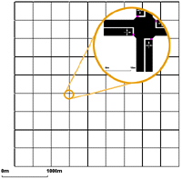
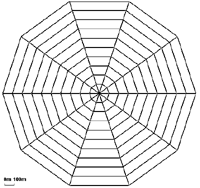

netgenerate allows the generation of three types of abstract networks: grid, spider and random.
The type of network you want to create must be stated with one of the following switches: --grid, --spider or --rand. You can supply the name of the network to generate using --output <FILENAME> or -o <FILENAME> for short, default "net.net.xml".
Grid-like Networks¶
You are able to describe how many junctions in x- and in y-direction you want to be build and how far from each other they should be. The parameter for the number of junctions are --grid.x-number and --grid.y-number, while the distance between the junctions are --grid.x-length and --grid.y-length. If you want to build networks which have the same values for both axes, use --grid.number and --grid.length. The lengths are given in meters. It is possible to give another option --grid.attach-length, which adds streets of the given length at the boundary of the grid such that all crossings have four streets (It is not yet possible to have different attach lengths for x and y directions).
An example usage for building could be:
netgenerate --grid --grid.number=10 --grid.length=400 --output-file=MySUMOFile.net.xml
or:
netgenerate --grid --grid.x-number=20 --grid.y-number=5 \
--grid.y-length=40 --grid.x-length=200 --output-file=MySUMOFile.net.xml
These calls will generate the following networks, respectively:


Spider-like Networks¶
Spider networks are defined by the number of axes dividing them (parameter --spider.arm-number or --arms, default is 13), the number of the circles they are made of (--spider.circle-number or --circles, default is 20) and the distance between the circles (--spider.space-radius or --radius in meters, default is 100).
Caution
The number of edges within the middle of the spider net may be quite large, so it is often not possible to build a traffic light junction here. Therefore, this junction is always unregulated.
Optionally, you can omit the central junction of the network by specifying --spider.omit-center or --nocenter. This also gives an easy way of generating a circle network. Using for instance
netgenerate --spider --spider-omit-center --output-file=MySUMOFile.net.xml
will create a circle consisting of 13 elements with a radius of 100m.
Two examples of usage:
netgenerate --spider --spider.arm-number=10 --spider.circle-number=10 \
--spider.space-radius=100 --output-file=MySUMOFile.net.xml
and:
netgenerate --spider --spider.arm-number=4 --spider.circle-number=3 \
--spider.space-radius=100 --output-file=MySUMOFile.net.xml
These calls will generate the following networks, respectively:


Random Networks¶
The random network generator does just what its name says, it builds random networks. Several settings may be changed:
- --rand.iterations <INT>:
- --rand.bidi-probability <FLOAT>: the probability to build a reverse edge
- --rand.max-distance <FLOAT>: the maximum edge length
- --rand.min-distance <FLOAT>: the minimum edge length
- --rand.min-angle <FLOAT>: the minimum angle between two edges
- --rand.num-tries <INT>:
- --rand.connectivity <FLOAT>:
- --rand.neighbor-dist1 <FLOAT>:
- --rand.neighbor-dist2 <FLOAT>:
- --rand.neighbor-dist3 <FLOAT>:
- --rand.neighbor-dist4 <FLOAT>:
- --rand.neighbor-dist5 <FLOAT>:
- --rand.neighbor-dist6 <FLOAT>:
An example:
netgenerate --rand -o MySUMOFile.net.xml --rand.iterations=200
This call will generate the following network:

Random Grids¶
By setting the option --rand.grid, additional grid structure is enforce during random network generation. Newly generated grid nodes, will branch of in cardinal directions from existing nodes at multiples of --rand.min-distance up to a distance of --rand.max-distance. Since new nodes are connected to multiple existing nodes, there will still be edges at arbitrary angles but the basic structure of the network is grid-like.
 {: style="height:380px"}
{: style="height:380px"}
 {: style="height:380px"}
{: style="height:380px"}
Further Options¶
All abstract network types share some command line options.
- --default-junction-type-option (or -j for short): set the default type of junctions. (i.e. 'priority', 'traffic_light' ,,,)
- --turn-lanes: set number of turn lanes to generate at each junction
- --turn-lanes.length: set length of generated turn lanes. More specifically:
- 0: No separate turning only lanes;
- 1: Add a left-turn & turn-around-only lane as the new left-most lane;
- 2: Add a left-turn & turn-around-only lane as the new left-most lane, and a right-turn-only lane as the new right-most lane;
- 3: Add a turn-around-only lane as the new left-most lane, a left-turn-only lane as the new left-most-but-one lane, and a right-turn-only lane as the new right-most lane;
- 4: Add a turn-around-only lane as the new left-most lane, a left-turn-only lane as the new left-most-but-one lane, a left-turn-only lane as the new left-most-but-two lane, and a right-turn-only lane as the new right-most lane;
- 5: Add a turn-around-only lane as the new left-most lane, a left-turn-only lane as the new left-most-but-one lane, a left-turn-only lane as the new left-most-but-two lane, a left-turn only lane as the new left-most-but-three lane, and a right-turn-only lane as the new right-most lane.
- --perturb.x: disturb node positions in x direction by a random amount between 0 and FLOAT
- --perturb.y: disturb node positions in y direction by a random amount between 0 and FLOAT
- --perturb.z: disturb node positions in z direction by a random amount between 0 and FLOAT
Further, you can set default values for streets and traffic lights by using the same options as in the netconvert-application. Many other netconvert options such as --lefthand are also supported by netgenerate.